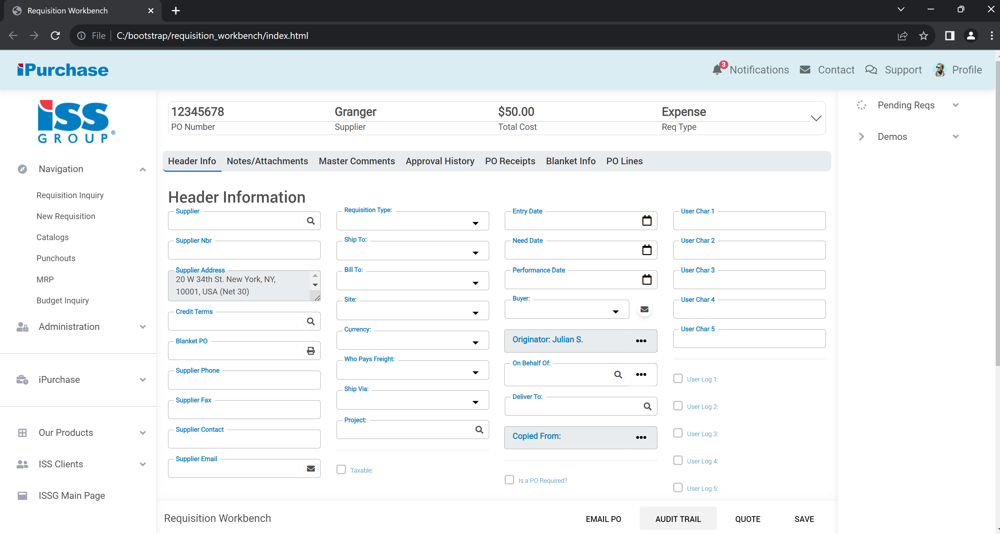
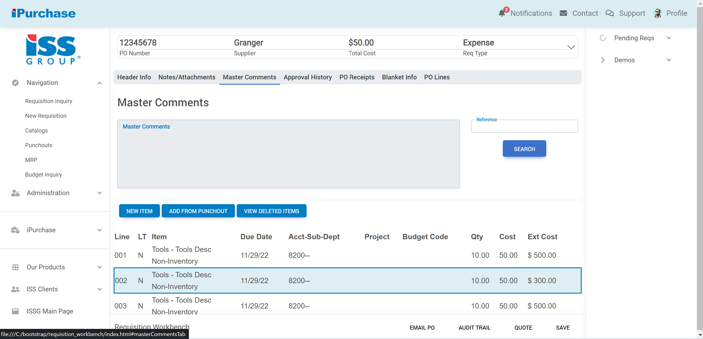
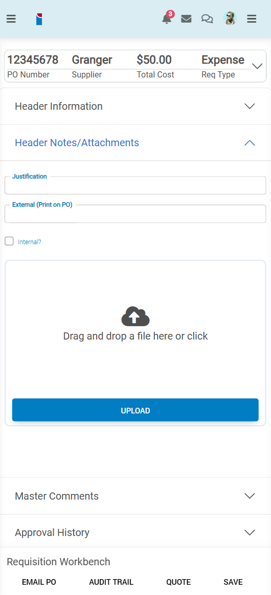

UI/UX Redesign for iPurchase (ISS Group)
A complete UI/UX overhaul of a Purchase Order portal. This project showcases advanced responsive design and user-centered innovations, optimized for cross-platform functionality and dynamic interactions.

Project Details / Background
During my co-op with ISS Group, I led the redesign of the iPurchase frontend product using Material Design Bootstrap. This required a deep understanding of modern UX principles, as well as extensive collaboration with stakeholders to iterate on designs. The final product included:
- Dynamic field labels to enhance form usability.
- Tab components that seamlessly transformed into accordions on smaller screens.
- Tables with adaptive layouts optimized for over 10 screen sizes.
My role required critical thinking and creativity to align user needs with technical capabilities. I took full ownership of the frontend architecture, writing over 5000 lines of responsive HTML, JavaScript, and CSS code. To ensure user satisfaction, I spearheaded A/B testing sessions, leading to a 50% increase in usability ratings.
Additionally, I conducted UX research with clients to identify pain points and implemented feedback to improve the interface further. This continuous improvement mindset ensured iPurchase was not just functional but exceptional. This transformative project was an incredible learning experience, honing my ability to solve complex problems and think critically about user experience.
Image Gallery

Final prototype of the desktop version.

Final prototype of iPurchase Mobile [with accordion-styled tab]